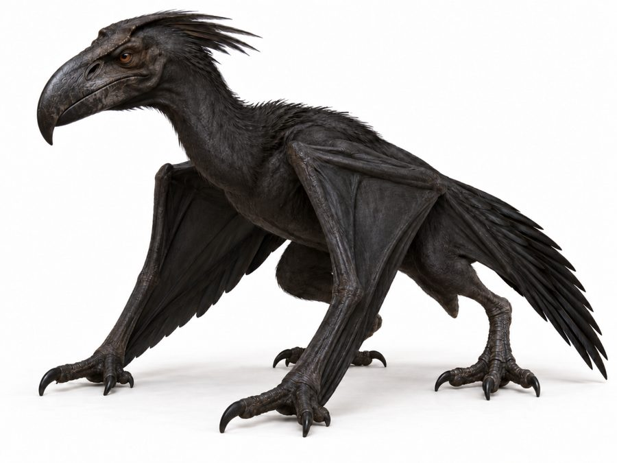

Vorunith
An airplane-sized aerial predator that is half raven and half pterosaur, and clever enough to be bribed.
- Group
- Flying
- Tags
- predator sky floating islands
- Size
- About the size of an airplane. Canon
- Body
- Pitch-black proto-feathers line the leathery wing membranes for completely silent gliding between the scattered floating islands. A feathered bony head crest works as a rudder. Heavy, bone-crushing beak. Canon
- Mind
- Hyper-intelligent, with sharp, calculating corvid eyes. Canon
- Launch
- A quadrupedal launch that lets it catapult into the air from a standstill. Canon
- Nesting
- On the highest island spires, where it hoards stolen crystalline quills. Canon
Hunting
- It drops boulders to shatter armored prey. Canon
- It uses vocal mockery to lure targets into the open. Canon
Temper
Highly territorial, and known for holding grudges against hunters across generations. Canon
Living with them
- Mesh canopies. Heavy iron netting, rope webs or spiked canopies span open plazas, since the wings are too large to dive through. Canon
- Spike-row roofs. Long upward spikes stop one from landing on a house. Canon
- The toll. Because they think like ravens, they can be bribed. Sky-captains drop tribute, such as a cage of Skarith or raw meat, over the side. Canon
Feathers
Naturally shed flight feathers are collected without harming the animal, under House Vorunaq. They become fans, capes, collars, headdresses and ceremonial standards. Canon
